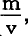
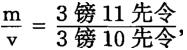

+m（m是剩余价值），例如，镑+镑。原来的资本C变为C′，由500镑变为590镑。二者的差额＝m，即90镑剩余价值。因为各种生产要素的价值等于预付资本的价值，所以，说产品价值超过产品的各种生产要素的价值而形成的余额，等于预付资本的价值增殖额，或等于生产出来的剩余价值，实际上是同义反复。
+m（m是剩余价值），例如，镑+镑。原来的资本C变为C′，由500镑变为590镑。二者的差额＝m，即90镑剩余价值。因为各种生产要素的价值等于预付资本的价值，所以，说产品价值超过产品的各种生产要素的价值而形成的余额，等于预付资本的价值增殖额，或等于生产出来的剩余价值，实际上是同义反复。第七章剩余价值率
1.劳动力的剥削程度
预付资本C在生产过程中生出的剩余价值，或预付资本价值C的增殖额，首先表现为产品价值超过产品的各种生产要素的价值总和而形成的余额。
资本C分为两部分，一部分是为购买生产资料而支出的货币额c，另一部分是为购买劳动力而支出的货币额v；c代表转化为不变资本的价值部分，v代表转化为可变资本的价值部分。因此，最初是C＝c+v，例如，预付资本500镑＝镑+镑。在生产过程结束时得到商品，它的价值＝+m（m是剩余价值），例如，镑+镑。原来的资本C变为C′，由500镑变为590镑。二者的差额＝m，即90镑剩余价值。因为各种生产要素的价值等于预付资本的价值，所以，说产品价值超过产品的各种生产要素的价值而形成的余额，等于预付资本的价值增殖额，或等于生产出来的剩余价值，实际上是同义反复。
然而，对这个同义反复需要作进一步的规定。这里同产品价值相比较的，是产品形成过程中消耗的各种生产要素的价值。但是我们已经知道，由劳动资料构成的那部分被使用的不变资本只是把自己价值的一部分转给产品，而其余的部分仍然保留在原来的存在形式中(1)。既然这后一部分在价值形成中不起任何作用，在这里就可以把它抽去。即使把它计算进去，也不会引起任何改变。假定c＝410镑，由原料312镑、辅助材料44镑和在过程中磨损的机器54镑组成，而实际使用的机器的价值是1054镑。我们只把机器因执行职能而失掉的并因而转给产品的54镑价值，算作为生产产品价值而预付的价值。如果我们把仍然保留在原来形式（如蒸汽机等等）中的1000镑计算进去，就必须在预付价值和产品价值这两边都加上1000镑。(2)这样，一边就是1500镑，另一边就是1590镑差额或剩余价值仍然是90镑。因此，凡从上下文联系中得不出相反意思的地方，我们谈到为生产价值而预付的不变资本时，总只是指在生产中消耗的生产资料的价值。
根据这样的假定，我们再回头来谈C＝c+v这个公式，这个公式现在转化为并且正因为这样，C转化为C′。我们知道，不变资本的价值只是再现在产品中(3)。可见，在生产过程中实际新生产的价值产品，是和从这个过程中得到的产品价值不同的。因此，它不像乍一看来那样，仿佛是或而是v+m，或不是590镑，而是180镑。如果不变资本c＝0，换句话说，如果有这样一些产业部门，它们的资本家可以不使用经过生产的生产资料，既不使用原料、辅助材料，也不使用劳动工具，而只是使用天然存在的材料和劳动力，那么，就不会有不变价值部分转移到产品上去。产品价值的这个要素，即我们例子中的410镑，就会消失，但是包含90镑剩余价值的180镑的价值产品仍然会同c代表最大的价值额时一样大。现在，而已经增殖的资本C′＝v+m，C′-C仍然＝m。相反，如果m＝0，换句话说，假定劳动力（其价值是以可变资本预付的）只是生产了自己的等价物，那么C＝c+v，C′（产品价值）因此，C＝C′。预付资本没有增殖。
实际上我们已经知道，剩余价值只是v这个转变为劳动力的资本部分发生价值变化的结果，因此，v+m＝v+v（v加v的增长额）(4)。但是现实的价值变化和价值变化的比率却是被这样的事实掩盖了：由于资本可变组成部分的增加，全部预付资本也增加了。全部预付资本以前是500，现在变成了590。可见，要对这个过程进行纯粹的分析，必须把产品价值中只是再现不变资本价值的那一部分完全抽去，就是说，必须使不变资本c＝0。这样就要运用数学上的一条定律，就是数学上运算变量和常量的定律，即运算常量同变量相加减的定律。
另一个困难是由可变资本的原有形式产生的。比如在上述例子中，C′＝410镑不变资本+90镑可变资本+90镑剩余价值。90镑是已知量，因而是不变量，因此把它当作可变量似乎是不合理的。但镑或90镑可变资本，在这里实际上只是这个价值所经过的过程的符号。购买劳动力所预付的资本部分是一定量的对象化劳动，因而同购买的劳动力的价值一样，是一个不变的价值量。但是，在生产过程本身中，预付的90镑为发挥作用的劳动力所代替，死劳动为活劳动所代替，静止量为流动量所代替，不变量为可变量所代替。结果是v的再生产加v的增长额。从资本主义生产的观点来看，这全部进程是转变为劳动力的那个原来不变的价值的自行运动。过程及其结果都要归因于这个价值。因此，如果说90镑可变资本或自行增殖的价值这个说法看来是矛盾的，那么它只是表现了资本主义生产固有的矛盾。
乍一看来，假定不变资本等于0是很奇怪的。但在日常生活中人们经常这样做。例如，有人要计算英国棉纺织业的利润，他首先就会扣除付给美国、印度、埃及等国的棉花价格，就是说，使在产品价值中只是再现出来的资本价值＝0。
当然，不仅剩余价值同直接产生它并由它来表示其价值变化的那部分资本的比率具有重大的经济意义，而且剩余价值同全部预付资本的比率也具有重大的经济意义。因此我们将在第三册[180]中详细讨论后一比率。要使资本的一部分转变为劳动力而增殖，就必须使资本的另一部分转化为生产资料。要使可变资本起作用，就必须根据劳动过程的一定的技术性质，按相应的比例来预付不变资本一定的化学过程固然需要蒸馏器及其他容器，但这并不妨碍我们在分析时把蒸馏器本身抽去。如果对价值创造和价值变化就其本身进行考察，也就是说，进行纯粹的考察，那么生产资料，不变资本的这些物质形态，就只是提供一种物质，使流动的、形成价值的力得以固定在上面。因此，这种物质的性质如何是没有关系的，无论它是棉花还是铁都一样。这种物质的价值如何也是没有关系的。它只须有足够的量，以便能吸收生产过程中要消耗的劳动量。只要有了足够的量不管它的价值提高或是降低，或者像土地和大海那样没有价值，都不会影响价值创造和价值变化的过程。(5)
这样，我们先假定不变资本部分等于零。于是，预付资本就从c+v简化为v，产品价值就简化为价值产品假定价值产品＝180镑，代表整个生产过程期间流动的劳动，我们从中扣除90镑可变资本的价值，就可得到90镑剩余价值。90镑（m）这个数字在这里表示所生产的剩余价值的绝对量。剩余价值的相对量，即可变资本价值增殖的比率，显然由剩余价值同可变资本的比率来决定，或者用来表示。在上述例子中，它是我把可变资本的这种相对的价值增殖或剩余价值的相对量，称为剩余价值率。(6)
我们已经知道，工人在劳动过程的一段时间内，只是生产自己劳动力的价值，就是说，只是生产他的必要生活资料的价值。(7)因为他是在以社会分工为基础的状态下进行生产，所以他不是直接生产自己的生活资料，而是以某种特殊的商品形式（如棉纱）生产出同他的生活资料的价值相等的价值，或者说，同他用来购买生活资料的货币相等的价值。他为此耗费的工作日部分是大小不同的，这取决于他每天平均的生活资料的价值，也就是取决于每天生产这些生活资料所需要的平均劳动时间。如果工人每天的生活资料的价值平均代表6个对象化劳动小时，那么，工人要生产这个价值，就必须平均每天劳动6小时。如果他不是为资本家劳动，而是独立地为自己劳动，在其他条件相同的情况下，他平均一天同样要劳动这么多小时，才能生产出自己的劳动力的价值，从而获得维持或不断再生产自己所必需的生活资料。但是，因为工人在生产劳动力日价值（如3先令）的工作日部分内，只是生产资本家已经支付(8)的劳动力价值的等价物，就是说，只是用新创造的价值来补偿预付的可变资本的价值，所以，这种价值的生产只是表现为再生产。因此，我把进行这种再生产的工作日部分称为必要劳动时间，把在这部分时间内耗费的劳动称为必要劳动。(9)这种劳动对工人来说所以必要，是因为它不以他的劳动的社会的形式为转移。这种劳动对资本和资本世界来说所以必要，是因为工人的经常存在是它们的基础。
劳动过程的第二段时间，工人超出必要劳动的界限做工的时间，虽然耗费工人的劳动，耗费劳动力，但并不为工人形成任何价值。这段时间形成剩余价值，剩余价值以从无生有的全部魅力引诱着资本家。我把工作日的这部分称为剩余劳动时间，把这段时间内耗费的劳动称为剩余劳动（surplus labour）。把价值看作只是劳动时间的凝结，只是对象化的劳动，这对于认识价值本身具有决定性的意义，同样，把剩余价值看作只是剩余劳动时间的凝结，只是对象化的剩余劳动，这对于认识剩余价值也具有决定性的意义。使各种经济的社会形态例如奴隶社会和雇佣劳动的社会区别开来的，只是从直接生产者身上，劳动者身上，榨取这种剩余劳动的形式。(10)
因为可变资本的价值等于它所购买的劳动力的价值，因为这个劳动力的价值决定工作日的必要部分，而剩余价值又由工作日的剩余部分决定，所以从这里可以得出结论：剩余价值和可变资本之比等于剩余劳动和必要劳动之比，或者说，剩余价值率这两个比率把同一种关系表现在不同的形式上：一种是对象化劳动的形式，另一种是流动劳动的形式。
因此，剩余价值率是劳动力受资本剥削的程度或工人受资本家剥削的程度的准确表现。(11)
按照我们的假定，产品的价值＝预付资本＝500镑。因为剩余价值＝90，预付资本＝500，所以按照通常的计算方法，人们就说：剩余价值率（人们把它同利润率混为一谈）＝18%。这样低的比率是会使凯里先生及其他和谐论者感动的。但实际上剩余价值率不是＝或而是＝也就是说，不是而是比表面的剥削程度的5倍还要多。虽然我们在这个场合不知道工作日的绝对量，不知道劳动过程的期间（日、周等等），也不知道90镑可变资本同时推动的工人人数，但剩余价值率由于可以转化为就精确地向我们表明工作日的两个组成部分的比率。这个比率为100%。因此，工人是半天为自己劳动，半天为资本家劳动。
这样，计算剩余价值率的方法可以简述如下：我们把全部产品价值拿来，使其中只是再现的不变资本价值等于零。余下的价值额就是在商品形成过程中实际生产出来的惟一的价值产品。如果剩余价值已定，我们从这个价值产品中减去剩余价值，就可得出可变资本。如果可变资本已定，而我们要求出剩余价值，那就得从这个价值产品中减去可变资本。如果这二者已定，那就只须进行最后的运算，计算剩余价值同可变资本的比率
这种方法虽然很简单，但它所依据的见解是读者所不习惯的看来，举几个例子使读者熟悉一下是适当的。
我们先举一家纺纱厂的例子，该厂拥有10000个走锭纺纱纱锭用美国棉花纺32支纱，每个纱锭一周生产1磅棉纱。飞花占6%。因此，每周有10600磅棉花被加工成10000磅棉纱和600磅飞花1871年4月，这种棉花每磅花费 便士，因此10600磅棉花约为342镑。10000个纱锭（包括粗纺机和蒸汽机在内），按每个花费1镑计算，共为10000镑。它们的损耗率是10%＝1000镑，或每周20镑。厂房的租金是300镑，或每周6镑。煤每周11吨（每小时1马力用煤4磅，100马力（按示功器）1周60小时的用煤量，外加房屋取暖用煤），每吨按8先令6便士计算，每周约花费镑，煤气每周1镑，机油每周镑，因此，以上所有的辅助材料每周共需10镑。总之，不变价值部分每周是378镑。工资每周是52镑。棉纱的价格是每磅
便士，因此10600磅棉花约为342镑。10000个纱锭（包括粗纺机和蒸汽机在内），按每个花费1镑计算，共为10000镑。它们的损耗率是10%＝1000镑，或每周20镑。厂房的租金是300镑，或每周6镑。煤每周11吨（每小时1马力用煤4磅，100马力（按示功器）1周60小时的用煤量，外加房屋取暖用煤），每吨按8先令6便士计算，每周约花费镑，煤气每周1镑，机油每周镑，因此，以上所有的辅助材料每周共需10镑。总之，不变价值部分每周是378镑。工资每周是52镑。棉纱的价格是每磅 便士，或10000磅＝510镑，因此剩余价值是510镑-430镑＝80镑。我们使不变价值部分378镑＝0，因为它在每周的价值形成中不起作用。这样，每周的价值产品因此，剩余价值率＝在10小时的平均工作日内，必要劳动＝时，剩余劳动＝小时。(12)
便士，或10000磅＝510镑，因此剩余价值是510镑-430镑＝80镑。我们使不变价值部分378镑＝0，因为它在每周的价值形成中不起作用。这样，每周的价值产品因此，剩余价值率＝在10小时的平均工作日内，必要劳动＝时，剩余劳动＝小时。(12)
杰科布1815年作过如下的计算[185]，他假定每夸特小麦的价格是80先令，每英亩平均收小麦22蒲式耳，所以从每英亩得到的是1镑。这个计算预先把不同的项目互相抵消了，因而很不完备，但对我们的目的来说已经足够用了。
在这里（我们始终假定产品的价格＝它的价值），剩余价值是分为利润、利息、什一税等等不同项目的。这些项目与我们无关。我们把它们加在一起，就得到剩余价值3镑11先令。我们把买种子和肥料的3镑19先令作为不变资本部分，使它等于零。预付的可变资本就是3镑10先令，代替它而被生产出来的新价值是3镑10先令+3镑11先令。这样，在100%以上。工人用他的工作日的一半以上生产剩余价值，这些剩余价值被各种人用各种借口瓜分掉。(13)
2.产品价值在产品相应部分上的表现
现在我们再回头谈谈资本家是怎样使货币成为资本的那个例子。他的纺纱工人的必要劳动是6小时，剩余劳动也是6小时，因此劳动力的剥削程度是100%。(14)
一个十二小时工作日的产品是20磅棉纱，价值30先令。这个棉纱价值至少有8/10（24先令）是由已消耗的生产资料的只是再现的价值（20磅棉花20先令，纱锭等等4先令）构成的，或者说，是由不变资本构成的。其余的2/10是在纺纱过程中产生的6先令新价值，其中一半补偿预付的劳动力的日价值或可变资本，另一半形成3先令剩余价值。可见，这20磅棉纱的总价值是依下列方式构成的：
因为这个总价值表现在总产品20磅棉纱上，所以各个不同的价值要素也必定可以表现在产品的相应部分上。
如果说30先令的棉纱价值存在于20磅棉纱中，那么，这个价值的8/10或其不变部分24先令，就存在于8/10的产品或16磅棉纱中。在这当中，13(1/3)磅棉纱代表原料的价值，即纺掉的棉花的价值20先令，2(2/3)磅棉纱代表已消耗的辅助材料和劳动资料纱锭等等的价值4先令。
因此，13(1/3)磅棉纱代表总产品20磅棉纱中纺掉的全部棉花，即总产品的原料，此外再也不代表别的东西。虽然13(1/3)磅棉纱中只包含价值13(1/3)先令的13(1/3)磅棉花，但它们的追加价值6(2/3)先令形成其余6(2/3)磅棉纱中纺掉的棉花的等价物。结果好像其余的6(2/3)磅棉纱被抽掉了棉花，而总产品中的全部棉花都塞到13(1/3)磅棉纱中了。另一方面，在这13(1/3)磅棉纱中，现在既不包含已消耗的辅助材料和劳动资料的价值的任何一个原子，也不包含纺纱过程中创造的新价值的任何一个原子。
同样，剩下的包含不变资本余额（＝4先令）的2(2/3)磅棉纱，只是代表总产品20磅棉纱中所用掉的辅助材料和劳动资料的价值。
因此，8/10的产品或16磅棉纱，虽然从物体来看，从作为使用价值棉纱来看，它们同产品的其余部分一样，也是纺纱劳动的创造物，但从这里所讲的意义上看，它们并不包含纺纱劳动，并不包含在纺纱过程本身中吸收的劳动。好像它们没有经过纺就转化为棉纱了，好像它们的棉纱形态纯粹是虚假骗人的。其实，当资本家按24先令把这些棉纱卖出，又用这24先令买回生产资料时就会表明，这16磅棉纱不过是化了装的棉花、纱锭、煤炭等等。
反之，其余的2/10产品或4磅棉纱，现在只是代表12小时纺纱过程中生产的6先令新价值。其中包含的已用掉的原料和劳动资料的价值已经被剔除了，同前16磅棉纱合并在一起了。体现在20磅棉纱中的纺纱劳动都集中在2/10的产品上。好像这4磅棉纱是纺纱工人用空气纺成的，好像所用的棉花和纱锭是未经人类劳动而天然存在的，因而不会把任何价值加到产品中去。
这4磅棉纱包含一天纺纱过程所生产的全部价值产品，其中2磅棉纱只代表已用掉的劳动力的补偿价值，即3先令可变资本，其余2磅棉纱则只代表3先令剩余价值。
因为纺纱工人的12个劳动小时对象化在6先令中，所以在30先令的棉纱价值中就对象化了60个劳动小时。它们存在于20磅棉纱内，其中8/10或16磅棉纱是纺纱过程以前的48个劳动小时的化身，也就是对象化在棉纱的生产资料中的劳动的化身，而2/10或4磅棉纱则是纺纱过程本身中消耗的12个劳动小时的化身。
前面我们已经看到，棉纱的价值等于棉纱生产中创造的新价值加棉纱的生产资料中原先已有的价值之和(15)。现在我们又看到，产品价值在职能上或在概念上不同的组成部分，怎样能够表现在产品本身的相应部分上。
我们以上把产品——生产过程的结果——分成几个量。一个量只代表生产资料中包含的劳动，或不变资本部分。另一个量只代表生产过程中加进的必要劳动，或可变资本部分。最后一个量的产品只代表同一过程中加进的剩余劳动，或剩余价值。这种划分很简单但又很重要，这一点在以后把它应用到复杂的尚未解决的问题上时就可以看出。
上面我们把总产品当作一个十二小时工作日的完成结果来考察。但是我们还可以对总产品按其产生过程来考察，仍然把各个部分产品当作职能上不同的各个产品部分。
纺纱工人12小时生产20磅棉纱，因此1小时生产1(2/3)磅，8小时生产13(1/3)磅，也就是生产一个部分产品，其价值等于整个工作日纺掉的棉花的总价值。同样，往后的1小时36分生产的部分产品＝2(2/3)磅棉纱，因而代表12个劳动小时所用掉的劳动资料的价值。再往后的1小时12分，纺纱工人生产2磅棉纱＝3先令，这部分产品价值等于他在6小时必要劳动中所创造的全部价值产品。最后的6/5小时，他又生产2磅棉纱，其价值等于他半天剩余劳动所生产的剩余价值。这是英国工厂主日常应用的计算方法，例如他会说，他在最初8小时或2/3的工作日中把棉花赚回来，如此等等。我们知道，这个公式是正确的，其实它就是上面的第一个公式，不过把现成产品的各部分同时并存的空间变成了它们依次出现的时间。但是，伴随这个公式也可能产生极其蛮横的想法，特别是在那些实际上关心价值的增殖过程，但在理论上又有意曲解这一过程的头脑中会产生这种想法这些人可能这样想：我们的纺纱工人例如在他的工作日的最初8小时是生产或补偿棉花的价值，往后的1小时36分是生产或补偿已消耗的劳动资料的价值，再往后的1小时12分是生产或补偿工资的价值，而只有那非常著名的“最后一小时”才是献给工厂主生产剩余价值的。这样一来，纺纱工人就得创造双重奇迹：一方面，他在用棉花纱锭、蒸汽机、煤炭、机油等等纺纱的时候同时又生产这些东西；另一方面，他把一个有一定强度的工作日变成5个这样的工作日。就我们的例子来说，生产原料和劳动资料需要24/6=4个十二小时工作日，而把它们转化为棉纱还需要1个十二小时工作日。掠夺成性的贪欲相信这种奇迹，并且总是找得到发空论的献媚者来证明这种奇迹，下面这个历史上著名的例子就说明了这一点。
3.西尼耳的“最后一小时”
1836年的一个早晨，以经济学识和文体优美著称的纳索·威·西尼耳，这位在英国经济学家中在某种程度上相当于克劳伦的人，从牛津被召往曼彻斯特。他在牛津教授政治经济学，现在被召到这里来学习政治经济学。工厂主选中了他，要他充当斗士去反对新颁布的工厂法[187]和比工厂法更激进的争取十小时工作日的鼓动。工厂主以惯常的实际经验上的敏感看出，这位教授先生“还需要好好地最后雕琢一番”。因此他们写信叫他到曼彻斯特来。而这位教授先生把他在曼彻斯特从工厂主那里学到的课业，加以润色，写成一本小册子：《关于工厂法对棉纺织业的影响的书信》（1837年伦敦版）。在这本小册子里，我们可以读到下面一段很有教益的话：
“按照现行法律，凡雇用不满18岁的人的工厂，每天的劳动时间都不得超过11(1/2)小时，就是说，一周的前5天每天劳动12小时，星期六劳动9小时。下面的分析〈！〉说明，这种工厂的全部纯利润来源于最后一小时。假定工厂主投资100000镑，其中用在厂房和机器上的是80000镑，用在原材料和工资上的是20000镑。假定资本每年周转一次，总利润是15%，该厂全年的商品销售额应该是价值115000镑……一个工作日是23个1/2劳动小时，每个1/2劳动小时生产115000镑的5/115或1/23。在构成总额115000镑的23/23中，20/23即115000镑中的100000镑只是补偿资本， 1/23即总利润〈！〉15000镑中的5000镑补偿工厂和机器的磨损。其余2/23即每天最后两个1/2小时生产10%的纯利润。因此，在价格不变的情况下，如果工厂不是劳动11(1/2)小时，而是可以劳动13小时，那么，只要增加大约2600镑流动资本，就能使纯利润增加一倍以上。另一方面，劳动时间每天缩短1小时，纯利润就会消失，缩短1(1/2)小时，总利润也会消失。”(16)
这位教授先生竟把这种东西叫作“分析”！如果他真的相信工厂主的怨言，认为工人把一天的大部分时间用来生产从而再生产或补偿建筑物、机器、棉花、煤炭等等的价值，那么，任何分析都是多余的。他只须回答：诸位先生！如果你们把劳动时间从11(1/2)小时减为10小1(1/2)时，在其他条件相同的情况下，每天棉花、机器等等的消耗也会减少小时。因此，你们正好得失相当。以后你们的工人用来再生产或补偿预付资本价值的时间就会少1(1/2)小时。如果西尼耳不相信工厂主所说的话，而是作为内行认为必须作一番分析，他首先就得请求工厂主先生们，在专门涉及纯利润同工作日长度的关系的问题上不要把机器和厂房、原料和劳动混杂在一起，而是要把包含在厂房、机器、原料等等中的不变资本放在一边，把预付在工资上的资本放在另一边。在这之后，如果按照工厂主的计算，工人是用2/2个劳动小时或1小时再生产或补偿工资，那么这位分析家就应该接着说：
根据你们的说法，工人是在倒数第二小时生产自己的工资，在最后一小时生产你们的剩余价值或纯利润。因为工人在同样的时间内生产同样的价值，所以倒数第二小时的产品和最后一小时的产品具有同样的价值。其次，工人只有耗费劳动，才生产价值，而他的劳动量是由他的劳动时间来计量的。按照你们的说法，工人的劳动时间是每天11(1/2)小时。他用这11(1/2)小时的一部分来生产或补偿自己的工资，用另一部分来生产你们的纯利润。在这个工作日内他再也没有做别的事情。既然按照你们的说法，工人的工资和他提供的剩余价值是同样大的价值，那么工人显然是在5(3/4)小时内生产自己的工资，在其余5(3/4)小时内生产你们的纯利润。其次，因为两小时棉纱产品的价值等于他的工资的价值额加上你们的纯利润，所以这一棉纱的价值必然等于11(1/2)个劳动小时，也就是说，倒数第二小时的产品必然等于5(3/4)个劳动小时，最后一小时的产品也必然等于5(3/4)个劳动小时。现在我们到了棘手的地方了。请注意！倒数第二个劳动小时同最初一个劳动小时一样，都是一个通常的劳动小时。不多也不少。因此，纺纱工人怎么能在1个劳动小时内生产出代表5(3/4)个劳动小时的棉纱价值呢？实际上，他并没有创造这样的奇迹。他在个劳动小时内生产的使用价值是一定量的棉纱。这些棉纱的价值等于5(3/4)个劳动小时，其中4(3/4)小时未经他的协助就已包含在1小时消耗的生产资料棉花、机器等等内，而4/4小时或1小时才是由他自己加进的。因为他的工资是在5(3/4)小时内生产的，而1小时纺出的棉纱产品也包含5(3/4)个劳动小时，所以，他5(3/4)小时纺纱劳动的价值产品等于1小时纺纱劳动的产品价值，这并不是什么魔法妖术。如果你们以为他用了他的工作日的哪怕一个时间原子来再生产或“补偿”棉花、机器等等的价值，那你们就完全错了。由于他的劳动把棉花和纱锭变成棉纱，由于他纺纱，棉花和纱锭的价值就自行转移到棉纱上去。这种结果是靠他的劳动的质，而不是靠他的劳动的量造成的当然，他1小时转移到棉纱上去的棉花等等的价值比1/2小时多，但这只是因为他1小时纺掉的棉花比1/2小时多。现在你们懂了吧，你们所谓工人在倒数第二小时生产他的工资的价值，在最后一小时生产纯利润，只不过是说，他的工作日的2小时（不管是最初2小时或是最后2小时）的棉纱产品，体现着11(1/2)个劳动小时，正好等于他的整个工作日。所谓工人在前5(3/4)小时生产他的工资，在后5(3/4)小时生产你们的纯利润，又只不过是说，前5(3/4)小时你们给了报酬，后5(3/4)小时你们没有给报酬。这里我说劳动的报酬，而不说劳动力的报酬是为了用你们的行话。诸位先生，现在请把你们付给报酬的劳动时间和你们没有付给报酬的劳动时间比较一下，你们就会发现，二者的比率是半天比半天，也就是100%。这当然是一个很高的百分比而且毫无疑问的是，如果你们使你们的“人手”不是劳动11(1/2)小时而是劳动13小时，并且像你们会做的那样，把额外的1(1/2)小时也归入纯粹的剩余劳动，那么剩余劳动就会从5(3/4)小时增加到7(1/4)小时从而剩余价值率就会从100%增加到126(2/23)%。如果你们期望，加上1(1/2)小时就能使剩余价值率从100%增加到200%，甚至200%以上，即“增加一倍以上”，那未免太乐观了。另一方面——人的心是很奇怪的东西，特别是当人把心放在钱袋里的时候——如果你们担心工作日从11(1/2)小时缩减为10(1/2)小时会使你们的全部纯利润化为乌有，那又未免太悲观了。事情决不是这样的。假设其他一切条件相同，即使剩余劳动从5(3/4)小时降为4(3/4)小时，仍然会得出一个很好的剩余价值率，即82(14/23)%。但是这个致命的“最后一小时”——你们为它编造的神话比锡利亚信徒[188]为世界末日编造的神话还要多——是“十足的胡说”。失掉这最后一小时，你们并不会丧失“纯利润”，而你们使用的童男童女也不会失去“灵魂的纯洁”。(17)
当你们的“最后一小时”真的敲响的时候，请你们想起牛津的这位教授吧。好了，但愿在一个更美好的世界里再同诸位相会。再见！(18)……西尼耳1836年发现的“最后一小时”这个信号，在1848年4月15日，又被经济学界的一位大官老爷詹姆斯·威尔逊在伦敦《经济学家》杂志上重新吹奏起来，以反对十小时工作日的法律。
4.剩余产品
我们把代表剩余价值的那部分产品（在第2节(19)举的例子中，是20磅棉纱的1/10或2磅棉纱）称为剩余产品（surplus produce，produit net）。决定剩余价值率的，不是剩余价值同资本总额的比率，而是剩余价值同资本的可变组成部分的比率，同样，决定剩余产品的水平的，也不是剩余产品同总产品的其余部分的比率，而是剩余产品同代表必要劳动的那部分产品的比率。剩余价值的生产是资本主义生产的决定的目的，同样，富的程度不是由产品的绝对量来计量，而是由剩余产品的相对量来计量。(20)
必要劳动和剩余劳动之和，工人生产他的劳动力的补偿价值的时间和生产剩余价值的时间之和，构成他的劳动时间的绝对量——工作日（working day）。
(1) 见本卷第235—241页。——编者注
(2) “如果我们把所使用的固定资本的价值算作预付资本的一部分，我们就必须在年终时把这种资本的残余价值算作年收入的一部分。”（马尔萨斯《政治经济学原理》1836年伦敦第2版第269页）
(3) 见本卷第234—243页。——编者注
(4) 见本卷第242—243页。——编者注
(5) 第2版注：卢克莱修说，“无中不能生有”[181] ，这是不言而喻的。“值创造”是使劳动力转变为劳动。而劳动力首先又是已转变为人的机体的自然物质。
(6) 这是仿照英国人的“利润率”、“利息率”等等说法。读者在第三册会看到，只要知道了剩余价值的各个规律，利润率是容易理解的。如果走相反的道路，则既不能了解前者，也不能了解后者。
(7) 见本卷第225页。——编者注
(8) 〔第3版注：在这里，作者沿用了流行的经济学用语。我们记得，在第137页已经说明，实际上不是资本家“预付”给工人，而是工人“预付”给资本家。——弗·恩·〕
(9) 我们在本书的前面一直是用“必要劳动时间”这个词泛指生产一般商品的社会必要劳动时间。从现在起，我们也用这个词指生产独特的商品即劳动力的必要劳动时间。用同一术语表示不同的意思是容易发生误会的，但这种现象在任何科学中都不能完全避免。例如，我们可以用高等数学和初等数学作一比较。
(10) 威廉·修昔的底斯·罗雪尔先生[182] 以真正哥特舍德[183] 的天才发现，在今天，剩余价值或剩余产品的形成，以及与此相联的积累，是由于资本家的“节俭”，为此，资本家“比如说，要求得到利息”，相反，“在极低的文化阶段……是强者迫使弱者节俭”。（《国民经济学原理》1858年第3版第82、78页）是节约劳动呢？还是节约尚不存在的剩余产品呢？罗雪尔之流除了确实无知之外，又怀有辩护士的胆怯心情，不敢对价值和剩余价值作出诚实的分析，不敢得出可能是危险的违背警章的结论，正是这一点，迫使罗雪尔之流把资本家用来辩护自己占有已存在的剩余价值时表面上多少能说得过去的理由，歪曲成剩余价值产生的原因。
(11) 第2版注：剩余价值率虽然是劳动力剥削程度的准确表现，但并不是剥削的绝对量的表现。例如，如果必要劳动＝5小时，剩余劳动＝5小时，那么剥削程度＝100%。这里剥削量是5小时。但是如果必要劳动＝6小时，剩余劳动＝6小时，剥削程度仍然是100%，剥削量却增加了20%，由5小时增加到6小时。
(12) 第2版注：第一版所举的1860年一家纺纱厂的例子，有些事实错误。本文列举的材料非常精确，它是曼彻斯特的一位工厂主向我提供的。这里要指出一点，英国的旧马力是根据汽缸的直径计算的，而新马力则是根据示功器指示的实际马力计算的。[184]
(13) 我们引用的这个计算材料只是作为例解，因为假定价格＝价值。我们在第三册中会看到，即使拿平均价格来说，也不会这样简单地得出这个等式。[186]
(14) 见本卷第225—227页。——编者注
(15) 见本卷第232—234页。——编者注
(16) 西尼耳《关于工厂法对棉纺织业的影响的书信》1837年伦敦版第12、13页。我们且不谈那些和我们的目的无关的奇谈怪论，例如，说工厂主把补偿磨损的机器等等的金额，即补偿资本的一个组成部分的金额，算在总利润或纯利润、毛利润或净利润里面。我们也不去谈这些数据是否正确。伦纳德·霍纳在《给西尼耳先生的一封信（》1837年伦敦版）中已指明，这些数据除了供所谓“分析”外没有什么别的价值。伦纳德·霍纳是1833年的工厂调查委员会的委员，在1859年前，一直是工厂视察员——其实是工厂检查官。他对英国工人阶级有不朽的贡献。他终生不仅同恼怒的工厂主作斗争，而且同大臣作斗争，对于这些大臣来说，计算工厂主在下院的“票数”比计算“人手”在工厂内的劳动小时要重要得多。
注（32）的补充：且不谈西尼耳说的内容如何荒唐，他的叙述方法也是混乱的。其实，他想说的是：工厂主使工人每天劳动11(1/2)小时或23/2小时。正像一个工作日的情形一样，全年的劳动也是由11(1/2)小时或23/2小时（乘以一年的工作日数）构成。按照这个假定，23/2个劳动小时生产的年产品为115000镑； 1/2个劳动小时生产的年产品为1/23×115000镑；20/2个劳动小时生产20/23×115000镑＝100000镑，也就是说，它们只补偿预付资本。余下的3/2个劳动小时生产3/23×115000镑＝15000镑，即总利润。在这3/2个劳动小时中，1/2个劳动小时生产1/23×115000镑＝5000镑，即只补偿工厂和机器的损耗。最后的两个1/2劳动小时，即最后一个劳动小时，生产2/23×115000镑＝10000镑，即纯利润。在本文中，西尼耳把最后的的2/23产品转化为工作日本身的各个部分。
(17) 西尼耳证明，工厂主的纯利润、英国棉纺织业的存在和英国在世界市场上的地位都决定于“最后一个劳动小时”；而安德鲁·尤尔博士则又证明[189] ，如果不是把童工和不满18岁的青工在工厂的温暖而纯洁的道德气氛里关上整整12小时，而是提早“一小时”把他们赶到冷酷无情、放荡不羁的外界去，他们就会因懒惰和邪恶而使灵魂不能得救。从1848年起，工厂视察员在半年一次的《报告》中一直拿“最后的”、“致命的一小时”来嘲弄工厂主。例如，豪威耳先生在1855年5月31日的工厂视察报告中说：“假如下面这种巧妙的计算〈他引证西尼耳〉是正确的，联合王国的所有棉纺织厂从1850年起就已经赔本了。”（《工厂视察员报告。截至1855年4月30日为止的半年》第19页）当1848年议会通过十小时工作日法案[190] 时，分散在多塞特和萨默塞特两郡交界处的农村麻纺厂的工厂主们，强迫一些正规工人接受一份反对这项法案的请愿书，请愿书中有这样的话：“我们这些向你们请愿的人，作为父母，认为增加一小时闲荡的时间，结果只会使我们的孩子道德败坏，因为懒惰是万恶之始。”关于这一点，1848年10月31日的工厂视察员报告指出：“在这些敦厚善良的父母们的子女做工的麻纺厂里，空气中充满着原料的尘埃和纤维碎屑，即使只在纺纱车间呆上10分钟，也会感到非常难受，因为眼睛、耳朵、鼻孔、嘴巴里会立刻塞满亚麻的碎屑，根本无法躲避，这不能不使你感到极度的痛苦。同时，由于机器飞速地转动，这种劳动本身需要全神贯注，需要一刻不停地运用技巧和动作，这些儿童在这样的空气里除了吃饭时间外整整劳动10小时，现在还要他们的父母说自己的子女‘懒惰’，这未免太残酷了……这些儿童的劳动时间比附近农村里雇工的劳动时间还要长……所谓‘懒惰和邪恶’这种无情的胡说必须斥之为十足的假仁假义和最无耻的伪善……大约在12年以前，当有人在最高权威的批准下，十分自信地、郑重其事地公开宣布工厂主的全部‘纯利润’来源于‘最后一小时’劳动，从而工作日缩短一小时就会消灭纯利润的时候，一部分公众曾对这种自信程度感到惊讶；而现在，当这部分公众看到下面的事实时恐怕会不相信自己的眼睛了，这就是：关于充满善行的‘最后一小时’的独创的发现，从那时以来已经大大完善，不仅包括‘利润’，而且还包括‘道德’；因此，如果儿童的劳动时间减为整整10小时，儿童的道德会和他们的雇主的纯利润一道化为乌有，因为二者都取决于这最后的致命的一小时。”（《工厂视察员报告1848年10月31日》第101页）接着，这份工厂视察员报告举出了一些实例，说明这些工厂主先生的“道德”和“善行”，说明他们怎样施用阴谋、诡计、利诱、威胁、伪造等手段，迫使少数完全不会反抗的工人在这种请愿书上签名，然后把这种请愿书冒充整个产业部门和整个郡的请愿书提交议会。——无论是后来热心拥护工厂立法而值得赞扬的西尼耳本人，还是先后反对他的人，都不知道怎样说明这一“独创的发现”的错误结论。这个事实最能说明所谓经济“科学”的现状。他们只是诉诸实际经验。而理由和原因仍然是秘密。
(18) 这位教授先生总算从这次曼彻斯特的旅行中得到了一些好处！在关于工厂法的书信》中，全部纯利润，即“利润”、“利息”和甚至“更多的东西”取决于工人的一小时无酬劳动！而在一年前，西尼耳在他那本为牛津的大学生和有教养的庸人写的《政治经济学大纲》一书中，还反对李嘉图提出的价值由劳动时间决定的论点，“发现”利润来源于资本家的劳动，利息来源于资本家的禁欲主义，来源于他的“Abstinenz”［“节欲”］。这一派胡言本身是陈旧的，但“节欲”这个词是新鲜的。罗雪尔先生把这个词正确地译成德文的“Enthaltung”［“节制”］。但他的不大懂拉丁文的同胞维尔特们、舒耳茨们以及别的米歇尔们却把这个词变成了僧侣用语“Entsagung”［“禁欲”］。
(19) 见本卷第255—258页。——编者注
(20) “对于一个拥有20000镑资本，每年获得利润2000镑的人来说，只要他的利润在任何情况下都不低于2000镑，不管他的资本是雇100个工人还是雇1000个工人，不管生产的商品是卖10000镑还是卖20000镑，都是一样的。一个国家的实际利益不也是这样吗？只要这个国家的实际纯收入，它的地租和利润不变，这个国家的人口有1000万还是有1200万，都是无关紧要的。”李嘉图《政治经济学原理》1821年伦敦第3版第416页）早在李嘉图之前，有一位剩余产品的狂热的崇拜者阿瑟·杨格——他还是一个喜欢空谈而缺乏批判精神的作家，他的名声和他的功绩适成反比——就曾说过：“在一个现代王国里，如果像古罗马那样把整个省区的土地分给独立的小农耕种，即使他们耕种得很好，又有什么用呢？除了繁殖人口别无其他目的，而人口繁殖本身是最没有用处的”（阿瑟·杨格《政治算术》1774年伦敦版第47页）。注（34）的补充：奇怪的是，“有一种强烈的倾向，把纯收入说成是对工人阶级有利的……但是很明显，它之所以有利，并不因为它是纯的”（托·霍普金斯《论地租》1828年伦敦版第126页）。
[180] 见马克思《资本论（1863—1865年经济学手稿）》第三册（《马克思恩格斯全集》1992年历史考证版第2部分第4卷第2册。——248、447、467、519、553、652。
[181] “无中不能生有”引自卢克莱修《物性论》第1卷第156—159行。——249。
[182] 修昔的底斯是古希腊历史学家，马克思把威廉·罗雪尔讽刺地叫作威廉·修昔的底斯·罗雪尔，因为这个庸俗经济学家在他的著作《国民经济学原理》第一版序言中，如马克思所说，“谦虚地宣称自己是政治经济学的修昔的底斯”。罗雪尔在引用修昔的底斯的著作时表示：“像那些我特别地奉为老师的古代历史学家一样，我也希望我的著作有益于……”等等（见马克思《政治经济学批判（1861—1863年手稿）》第ⅩⅤ笔记本第922页）。——251。
[183] 德国作家和文学批评家约·克·哥特舍德在文学上曾起一定的积极作用，但同时他又对新的文学潮流表现出异常的偏执。因此，他的名字成了文学上傲慢与迟钝的同义语。——251。
[184] 马克思在《资本论》德文第1版中此处的注文中所举的一个纺纱业例子，摘自他的《政治经济学批判（1861—1863年手稿）》第Ⅱ笔记本第87页。在德文第2版中改写的第（31）注注文根据的是恩格斯提供的材料。见马克思在1865年11月20日和1868年5月7日和16日给恩格斯的信。——253。
[185] 威·杰科布《再论英国农业需要保护关税。给赛米尔·惠特布雷德议员先生的一封信》1815年伦敦版第33页。——254。
[186] 见马克思《资本论（1863—1865年经济学手稿）》第三册（《马克思恩格斯全集》1992年历史考证版第2部分第4卷第2册第2章《利润转化为平均利润》）。——254。
[187] 指1833年的工厂法《关于规定联合王国工厂儿童与少年劳动强度的法令。（1833年8月29日）》（见《公共普通法汇编》1833年伦敦版第103章）。马克思在本卷第320—326页还专门论述了1833年的工厂法。——259、321。
[188] 锡利亚一词源于希腊文锡利亚斯（Chilias，意为一千）。锡利亚教义产生在奴隶制度解体时期，宣传基督再临和在地球上建立公平、平等和幸福的“千年王国”的宗教神秘主义学说。它反映了农民和城市贫民的心态。这种信仰在基督教早期流传很广，后来经常重新出现在中世纪各种教派的学说中。——263。
[189] 安·尤尔《工厂哲学：或论大不列颠工厂制度的科学、道德和商业的经济》1835年伦敦版第406页。——263。
[190] 关于英国十小时工作日法案，见本卷第307—337页、恩格斯《英国的十小时工作日法》（《马克思恩格斯全集》中文第2版第10卷第299—310页）以及马克思《国际工人协会成立宣言》和《政治经济学批判（1861—1863年手稿）》第Ⅴ笔记本第217—218页。——263、324。